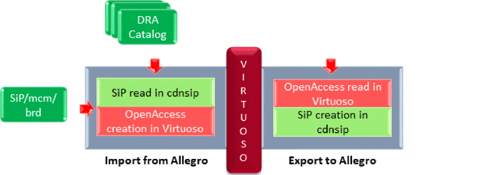

7
Package Design Translation Using Allegro Translators (ICADVM20.1 Virtuoso MultiTech Framework Only)
This chapter contains the following sections:
- Introduction to Allegro Translator
- Using the Allegro Translator
- Methods Used to Perform Package Design Translation
- Import Allegro File Form
- Export Allegro File Form
- Design Object Mapping
- Translating Parametrized Tline Cells
- Data Model Mapping
- Layer Mapping
- Troubleshooting Allegro File Translation Issues
Introduction to Allegro Translator
VRF is a schematic-driven layout flow in Virtuoso. The technology lets you use Virtuoso to create and edit package schematics and layouts. Package design and implementation are done in Allegro, which supports objects such as SMD (Surface Mounted Devices), padstacks, dies, bondwires, and bondwire fingers.
If the package implementation is initiated in Allegro and continued in Virtuoso, the Allegro Import translator maps these Allegro concepts into instances of Pcells. The supermasters are provided in a generic library and are also used when the package implementation is initiated in Virtuoso. During instance creation, CDF parameters are used to bind instance parameters to appropriate values.
Since Virtuoso does not have all the features to finish the package, implementation needs to be finished in Allegro. Layout data is transferred from Virtuoso to Allegro using the Allegro Export translator. The Allegro Export translator maps the parameters on the Pcell instances back to the Allegro objects.
Using the Allegro Translator
Allegro translator enables you to translate the following Allegro files:
- Cadence SiP Layout (.sip)
- Allegro Package Designer (.mcm)
- Technology file with layer stack up and constraint information
- Catalog of DRA
- A board or package file created in Allegro PCB Layout (.brd)
- A single SiP (sip, mcm, .brd) file or technology file is converted into an OpenAccess database.
- A catalog of DRA are converted into base cellviews.
Allegro Import involves the following two phases:
- In the first phase, the SiP file is read in the cdsnip tool that creates an intermediate file containing all the necessary information.
-
The Allegro Import translator reads this file and creates the OpenAccess database in Virtuoso.
User can now edit this database in Virtuoso.
Allegro Export also involves two phases, which are the following:
- The updated OpenAccess database is read in Virtuoso and an intermediate file is created.
-
The cdnsip tool is invoked to read this intermediate file and create the Allegro file or a DRA catalog.

Methods Used to Perform Package Design Translation
You can translate package design files by using the Allegro translators accessible through a Graphical User Interface (GUI).
To translate an Allegro package file to Virtuoso, launch:
To export a file from Virtuoso to an Allegro package file, launch:
Import Allegro File Form
To launch Allegro Import translator and display the Import Allegro File form, select the File – Import – From Allegro option from the CIW.
This section describes the various options on the Import Allegro File form.
Import Mode
Use the Import Mode option to specify the mode that you want to use to import package design files from Allegro:
Layout(sip/mcm/brd)
The Layout(sip/mcm/brd) option lets you import the design from Allegro into Virtuoso. This is the default option.
Allegro File
Specify the Allegro File to be imported to Virtuoso. For example, ./sip_files/PKG_TOP4.sip. You can also use the File Browser button to select the Allegro file.
A typical Allegro file contains BGA cells, the vias to be used for package routing, and the technology file used in SiP. The technology file is compiled into the Virtuoso technology database.
Library
Use the Library field to specify the target library where data is to be translated. The library name should be a logical name and follow the naming conventions supported by OpenAccess. For example, VRF_PKG_TOP. You can also select an existing library as the target library from the drop-down list.
Overwrite Components and Technology Information
Select the Overwrite Components and Technology Information option to overwrite all the existing information in the target library during translation. This option is disabled by default and is enabled only when you select an existing library file, as shown below:
This option enables you to import files from Allegro in the following two modes:
-
Incremental mode when the Overwrite Components and Technology Information option is deselected.
As stated earlier, not all updates related to a package can be done in Virtuoso. Therefore, you need to frequently import and export package designs between Allegro and Virtuoso. The default incremental mode enables you to update the existing library file every time you import a package design from Allegro. -
Non-incremental mode when the Overwrite Components and Technology is selected.
In this mode, the contents of the selected library file are overwritten during import.
Schematics Reference
Expand the Schematics Reference section to specify whether you want to import the schematics-related information in the layout.
- None Specify the None option if you do not want to add schematics references. This is the default value.
-
Generate Instances as in Schematic
Select the Generate Instances as in Schematic option to use an existing package schematic to create layout instances with the layout master of the corresponding schematic instance in Virtuoso.
When this option is specified, only those components from Allegro layout are imported that do not already exist in Virtuoso package schematic.
For example, consider a package schematic with die,
D1, and SMD cellviews,R1andR2, and thatD1,R1, andR2already exist in the schematic in Virtuoso. Now, when you specify the Generate Instances as in Schematic option, thenD1,R1, andR2are not imported. Instead, components from the schematic in Virtuoso are instantiated in the layout. This option is useful in reimporting an Allegro layout that was previously exported from Virtuoso.
Layout Generation
Expand the Layout Generation section to specify how you want to handle some of the layout components during import.
-
Add Symbol cellview for new BGA Components
Specify the Add Symbol cellview for new BGA Components option to create a
symbolview for the BGA that is being imported. The BGA is detected as the cell with the following configuration:COMPONENTCLASS=IOThesymbolview of the BGA components can be instantiated in the Package schematic. - Convert Dynamic Shapes to Static Shapes Specify the Convert Dynamic Shapes to Static Shapes option to convert dynamic shapes to statics shapes during import. No dynamic layer-purpose pair is created during this process.
Advanced
Expand the Advanced section to specify the following additional options.
- Display Resolution Use the Display Resolution drop-down list to specify the resolution for the top level cellview. Valid values are Very High, High, Medium, and Low. These values can be updated using Display Options in Virtuoso Layout Suite documentation.
- Layer Mapping File Use the Layer Mapping File field to specify an existing layer map file. You can also click the File Browser button to select the layer map file.
- Run Directory Use the Run Directory field to specify the default directory for all the files you specify in the Import Allegro File form. The run directory is created automatically (provided you have the appropriate permissions, if it does not exist during Allegro translation. Default value: Current working directory
Technology Information (sip/mcm/brd)
Use the Technology Information (sip/mcm/brd) option if you want to import only the technology information, such as stack up and constraints and vias. When you select this option the design information is not updated.
Allegro File
Specify the Allegro File to be imported to Virtuoso. For example, ./sip_files/PKG_TOP4.sip. You can also use the File Browser button to select the Allegro file.
A typical Allegro file contains the BGA cells, the vias to be used for package routing, and the technology file used in SiP. The technology file is compiled into the Virtuoso technology database. In this mode, only the technology information and vias are imported.
Library
Use the Library field to specify the target library where data is to be translated. The library name should be a logical name and follow the naming conventions supported by OpenAccess. For example, VRF_PKG_TOP. You can also select an existing library as the target library from the drop-down list.
Overwrite Components and Technology Information
Select the Overwrite Components and Technology Information option to overwrite all the existing information in the target library during translation. This option is disabled by default and is enabled only when you select an existing library file, as shown below:
This option enables you to import files from Allegro in following two modes:
-
Incremental mode when the Overwrite Components and Technology Information option is deselected
As stated earlier, not all updates related to a package can be done in Virtuoso. Therefore, you need to frequently import and export package designs between Allegro and Virtuoso. The default incremental mode enables you to update the existing library file every time you import a package design from Allegro. -
Non-incremental mode when the Overwrite Components and Technology is selected
In this mode, the contents of the selected library file are overwritten during import.
Advanced
Expand the Advanced options to specify the following:
- Layer Mapping File Use the Layer Mapping File field to specify an existing layer map file. You can also click the File Browser button to select the layer map file.
- Run Directory Use the Run Directory field to specify the default directory for all the files you specify in the Import from Allegro form. The run directory is created automatically (provided you have the appropriate permissions) if it does not exist during Allegro translation. Default value: Current working directory
DRA Files
Specify Import Mode as DRA Files to import multiple DRA files from Allegro. In this mode, a technology independent layout Pcell (TILP) and the base symbol definition (symdef_base) are created in Virtuoso.
DRA File Directory
Use DRA File Directory to specify the path to the directory containing the DRA files and padstack definitions in the DRA. You can also click the Directory Browser button to select the directory.
Library
Use the Library field to specify the target library where a catalog of DRA cellviews will be saved after import. The library name should be a logical name and follow the naming conventions supported by OpenAccess. For example, VRF_PKG_TOP. You can also select an existing library as the target library from the drop-down list.
Overwrite Components and Technology Information
Select the Overwrite Components and Technology Information option to overwrite all the existing information in the target library during translation. This option is disabled by default and is enabled only when you select an existing library file, as shown below:
This option enables you to import files from the Allegro in following two modes:
-
Incremental mode when the Overwrite Components and Technology Information option is deselected.
As stated earlier, not all updates related to a package can be done in Virtuoso. Therefore, you need to frequently import and export package designs between Allegro and Virtuoso. The default incremental mode enables you to update the existing library file every time you import a package design from Allegro. -
Non-incremental mode when the Overwrite Components and Technology is selected.
In this mode, the contents of the selected library file are overwritten during import.
SMD JEDEC Footprint Import Mode
When the SMD JEDEC Footprint Import Mode option is selected, only the base abstract cellview layout is created.
Export Allegro File Form
You can export SiP or MCM files from Virtuoso by using the Allegro Export translator.
After export, a new package file is created from the specified cellview and saved in the Allegro file.
To launch Allegro Export translator and display the Export Allegro File form, select the File – Export – To Allegro option from the CIW.
This section describes the various options on the Export Allegro File form.
Library
Use the Library option to specify a library from which a design is to be translated to the Allegro format. This is a mandatory field. You can also click the Library Browser button to select the library from the Library Browser form.
Cell
Use the Cell option to specify the name of the cell at the top of the hierarchy that you want to translate to the Allegro package file.
View
Use the View field to specify the view names that are created in the target library during translation.
Allegro File
Specify the Allegro File to which the exported data will be saved. You can also use the File Browser button to select the Allegro file.
Allegro Export proceeds only when you select a file with the correct file extension. The type of file depends on the fabric type in the technology database. It is:
Allegro Export can automatically detect the design type and propose the correct file extension.
Advanced
Expand the Advanced option to specify the following additional options:
Layer Mapping File
Use the Layer Map field to specify an existing layer map file. You can also click the File Browser button to select the layer map file.
Run Directory
The Run Directory field accepts the default directory for all the files you specify in the Export Allegro File form. If you want to read from or write to a file that is not present in the run directory, type the full path in the field for the file.
Use the directory browser to select the path of the run directory.
Default value: Current working directory
Design Object Mapping
The following images show a design in Allegro and how it looks when it is translated to Virtuoso:
The following image shows some of the Allegro design objects that have been translated to Virtuoso using the Allegro Import translator.
For more information on Allegro package design objects, see
Here, die is a wire-bound die component which has an outline and bounding pads.
Attached to the die are bounding wires that are three-dimensional objects and are represented as Pcells in Virtuoso and clines in Allegro.
Bonding fingers are the attachment points on the substrate for the wire bonds. They are pieces of metal, which are represented as separate objects in Allegro and finger instances in Virtuoso.
Next, you can see a pin of a package, where a package is a ball grid array (BGA) component, which is the container for the pins that have connections to the board.
Next, a component in the design is the surface mounted device (SMD), which has two pins in the design. At the bottom of the design, you can see some other components, such as pins of the die, shapes, vias, and clines.
Components and Symbols in SMD
During Allegro Import translation, we translate only the device type, which is the component definition (compdef) of the device. It is specified as the name of the TILPs, which is instantiated in Virtuoso.
In the following screenshot, the name of the cell is the name of the TILP
When a TILP is instantiated it takes several parameters. In case of SMD, one the parameters is JEDEC_TYPE. This represents the name of the package based on its size. For example, in the screenshot below, 0402 represents package of a certain size. In Allegro, this is a symbol, which is a physical device, and in Virtuoso it is the symbol definition or symdef.
In Virtuoso, there is a hierarchy of a TILP, which is the device type, and this Pcell refers to the base cell, which is the symdef.
Translating Parametrized Tline Cells
The Allegro translator preserves the instances of the parametrized Tline cells from the rfTlineLib library when they are exported to SiP from Virtuoso and then imported back.
When the design is exported to SiP, the library/cell/view and the Pcell parameter values of the Tline Pcell are stored in the SIPOA_TLINE property on the Tline symbol in SiP. At the same time, the Tline symbol in SiP is locked to prevent this property from being modified.
When the design is imported from Allegro back to Virtuoso, the value of this property is used to recreate the Tline Pcell as the instance of the cell from rfTlineLib.
Data Model Mapping
Data models in Allegro and Virtuoso have significant differences. The Allegro Import and Export translators bridge these modular differences.
The following table shows how package design objects in Allegro are mapped to objects in Virtuoso:
Layer Mapping
Cross-section layers in Allegro are mapped to technology layers with functions: metal, dielectric, and diestack.
Non-cross-section layers are mapped according to the definitions in the technology library, cdsDefTechLib.
Troubleshooting Allegro File Translation Issues
This section discusses issues that you might face during translation of Allegro files and shows how to either resolve or workaround them.
Allegro Import translation of an SIP file fails with an error in dbCreateVia
This issue occurs when layers of type conductor are defined outside the substrate. This causes issues because layers outside the substrate can be only of type diestack or dielectric.
In this case, if you open the Layer Stack Editor, Allegro Import translator will issue another warning indicating that something is wrong with the layer stack definition.
To resolve this issue, fix the SiP design using the config substrate layers command at the SiP command prompt.
Missing instances after mirrored rotation
In Allegro, a user is allowed to change elements in the instantiation of a symbol definition. In contrast, it is not possible to edit the instance of a master in Virtuoso.
For example consider a text element that is rotated on some or all of the instances by 180 degrees. The rotation parameter of the instance is correctly translated by Allegro Import translator and all the other parameters (like mirrored) are also correctly propagated. However, the imported instance does not match the component definition any longer because the instance was edited earlier.
In most cases, the translator detects these cases and creates a variant. Examples of such changes are symbol rotation, mirroring, and flipping. Other changes like changes to specific objects inside the symbol instance cannot be detected and result in mismatches between the Allegro view of the geometry within the edited symbol and the Virtuoso view of the underlying master.
To resolve this issue, the variants must be manually created in Allegro by associating the symbols with new symbol definitions containing the edited geometries.
Finger instances in Virtuoso are exported to Allegro as padstacks
When you export instances of bond fingers from Virtuoso to Allegro, they are always created as padstack instances in the SIP layout. The shape type in Virtuoso is ignored. When such bond fingers are imported from Allegro back to Virtuoso, their layout is restored, but their shape type becomes padstack regardless of their previous shape type. The exported bond finger shape type can only be restored to its original shape type manually by defining all the required parameters, such as shapeType, width, length, layer, diameter, and soldermask for each bond finger instance. Additionally, it needs to be ensured that the shapeType and other parameters stored on the finger match the definition of the padstack the finger instance is referencing. If the change of shape type when exporting and importing bond fingers to and from Allegro is not desired, it can be avoided by defining their shapeType as padstack.
Return to top